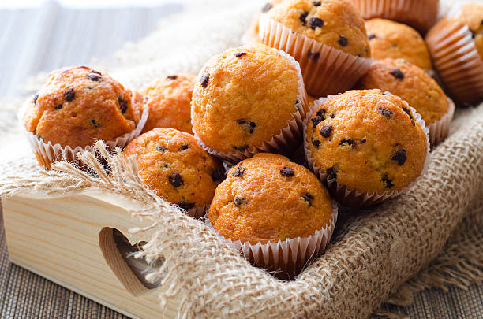

Muffins
Let's be fair and assess the pros and cons of muffins.
| Pros | Cons |
|---|---|
| - Convenience: Muffins are convenient and portable, making them a quick and easy snack or breakfast option. | - Nutritional Content: Many commercial muffins can be high in sugar, unhealthy fats, and calories, potentially contributing to an unhealthy diet if consumed in excess. |
| - Variety: There are numerous flavors and types of muffins available, catering to a wide range of preferences. Whether you like sweet, savory, fruity, or nutty, there's likely a muffin flavor for you. | - Ingredients: Some muffin recipes may include processed or artificial ingredients, which may not align with a preference for whole and natural foods. |
| - Portion Control: Muffins are typically portion-sized, which can be beneficial for those looking to control their food intake. | - Allergens: Muffins commonly contain allergens such as gluten, dairy, and nuts, which can be problematic for individuals with allergies or dietary restrictions. |